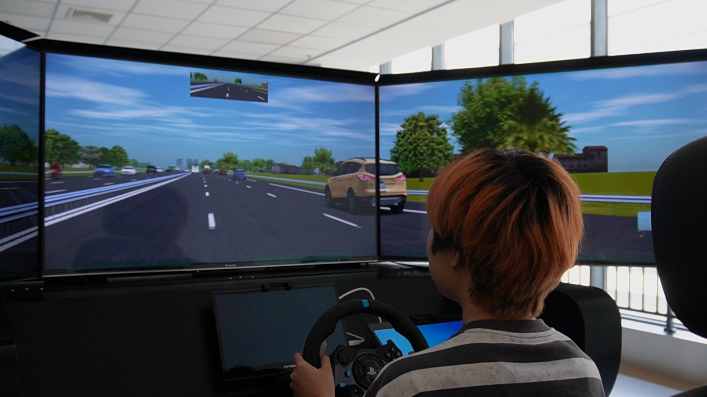
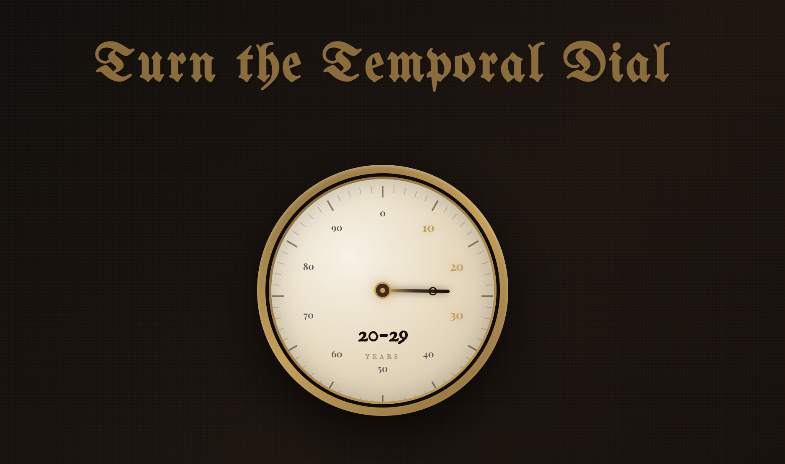
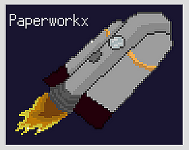

My research interests span...
Fall 2025 - Present
Majoring in Information Science

Fall 2023 - Spring 2025
Majoring in Industrial Engineering
March 2026 - present
Carnegie Mellon University
Human Computer Interaction Institute
Prof. Bruce M. McLaren
December 2025 - Present
Tsinghua University, Beijing, China (Remote)
Department of Computer Science and Technology
August 2025 - Present
University of Pittsburgh, School of Computing and Information
Prof. Dmitriy Babichenko, Department of Informatics and Networked Systems
December 2024 - Present
Sichuan University-Pittsburgh Institute, South Campus N420
Dr. Xiaomei Tan, Department of Industrial Engineering

A game about being a salesperson on Black Friday. Made for TheJam@GDC 2026 with the theme "Celebrate".
Mar 2026

A web-based emotional sharing platform that helps users express and process their feelings while discovering they're not alone. 2nd Place winner at Pitt's She Innovates 2026.
Feb 2026
A research initiative transforming legacy educational games into collaborative virtual worlds (Research Assistant).
Fall 2025 - Present

1st Place Narrative Design winner at Pitt's Games 4 Social Impact 2025.
Oct 2025
2025 IEEE 2nd International Conference on Deep Learning and Computer Vision (DLCV), Jinan, China, 2025, pp. 1-5.
This study proposes a machine learning triaging model based on blood biomarkers to predict the progression risk of cognitive decline in patients with mild cognitive impairment.
HCI International 2025 Posters. HCII 2025. Communications in Computer and Information Science, vol 2525. Springer, Cham, 2025
This research examines how drivers interact with and trust automated vehicles during potentially hazardous driving scenarios, providing insights into human-automation interaction patterns.